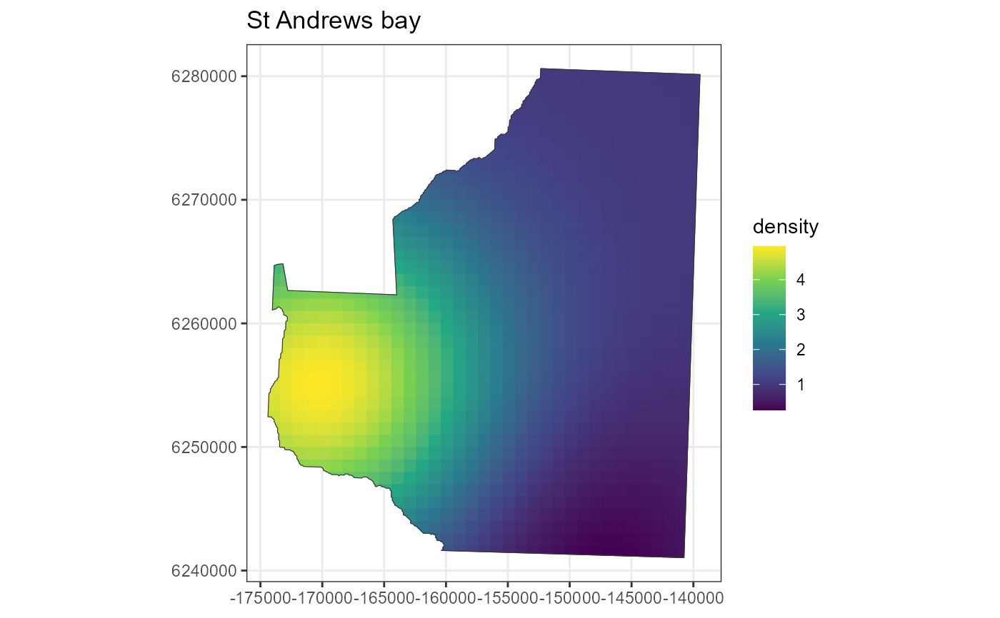

Creates a density grid across the study area describing the distribution of animals.
Arguments
- region
the Region object in which the density grid will be created
- x.space
the intervals in the grid in the x direction
- y.space
the intervals in the grid in the y direction
- constant
a value describing a constant density across the surface. If not supplied a default value of 1 is used for all strata.
- fitted.model
gamobject created usingmgcvwith only x and y as explanatory covariates.- density.formula
a formula of x and/or y describing the density surface.
- density.surface
Object of class
list; an sf grid recording the density grid polygons, density values within those polygons and the central x and y coordinates.
Value
Density-class object
Details
There are multiple ways to create the density grid. The most straight forward
is to create a grid with constant values (to which high and low areas can later
be added) or pass in a fitted mgcv gam. The gam model should only be fitted
with x and y as explanatory variables. If you plan on trying multiple
animal distributions by adding high and low areas to a constant surface it is
recommended to make a copy of the initial flat density grid object as the first
step in grid generation is computationally intensive and can take a little while
to complete, especially if you have a fine density grid.
Examples
# A simple density surface with a constant value of 1 can be created within a rectangular
# Create a region from shapefile
shapefile.name <- system.file("extdata", "StAndrew.shp", package = "dssd")
region <- make.region(region.name = "St Andrews bay",
shape = shapefile.name)
# Create a density object
density <- make.density(region = region,
x.space = 1000,
constant = 1)
# Add some ares of higher / lower density
density <- add.hotspot(object = density,
centre = c(-170000, 6255000),
sigma = 10000,
amplitude = 4)
density <- add.hotspot(object = density,
centre = c(-150000, 6240000),
sigma = 10000,
amplitude = -0.9)
# Plot the density
plot(density, region)
